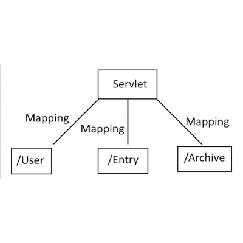

Modern Java dünyasında Spring Boot ile çalışırken sadece bir @RestController ve @GetMapping yazarak dakikalar içinde API uçları oluşturabiliyoruz. Fakat arka planda istekleri karşılayan, thread yönetimini yapan ve HTTP çevrimini yöneten asıl gücü — yani Servlet mimarisini çoğu zaman gözden kaçırıyoruz.
"Spring Boot'un sihirli dünyasını gerçekten anlamak, altındaki Servlet ve Tomcat konteynerinin çalışma mekanizmasını bilmekten geçer."
Servlet Nedir?
Servlet; istemciden (tarayıcıdan veya mobilden) gelen HTTP isteklerini alan, iş mantığını çalıştıran ve istemciye bir HTTP yanıtı (HTML, JSON, XML vb.) döndüren sunucu taraflı Java bileşenidir.
Servlet Yaşam Döngüsü (Life Cycle)
Bir Servlet konteyneri (örneğin Apache Tomcat) bir servlet'i şu üç temel evrede yönetir:
init(): Servlet ilk kez ayağa kalkarken bir kereye mahsus çalıştırılır.service(): Gelen her istek için ayrı bir thread içerisindedoGet(),doPost()gibi metotları tetikler.destroy(): Uygulama kapatılırken kaynakların serbest bırakılması için çağrılır.
Spring Boot ve DispatcherServlet İlişkisi
Spring Web (Spring MVC) aslında Servlet standardı üzerine inşa edilmiş dev bir orkestrasyon motorudur. Gelen tüm HTTP istekleri öncelikle tek bir merkezi servlete düşer: DispatcherServlet (Front Controller Pattern).
DispatcherServlet, isteğin URL'ine bakarak ilgili HandlerMapping üzerinden doğru Controller metodunu bulur, parametreleri bağlar ve yanıtı geri döndürür.
Özet
Derinlemesine bir Java backend mühendisi olmak, framework'lerin arkasındaki temel protokollere ve Servlet gibi temel yapı taşlarına hakim olmayı gerektirir.